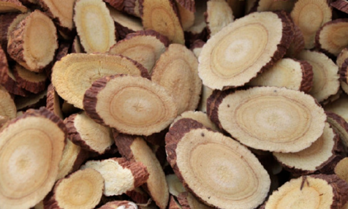
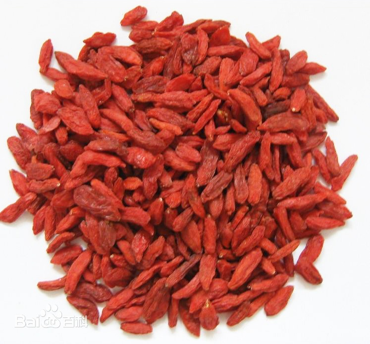
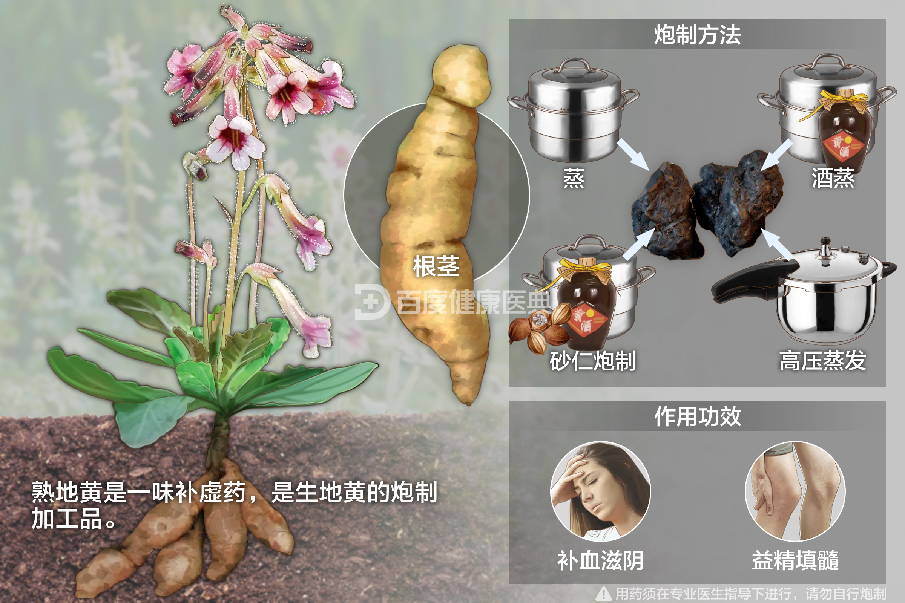
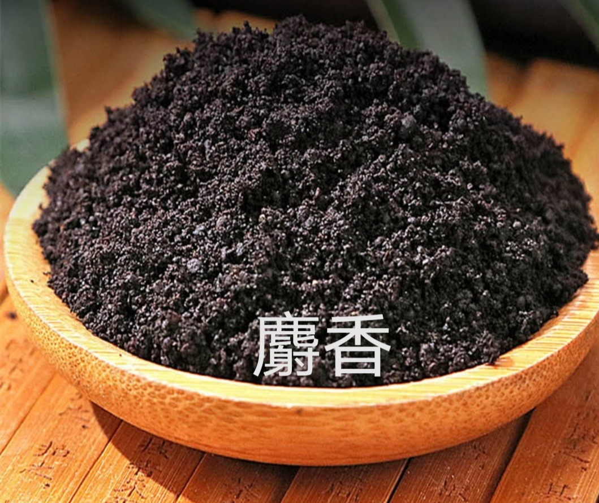
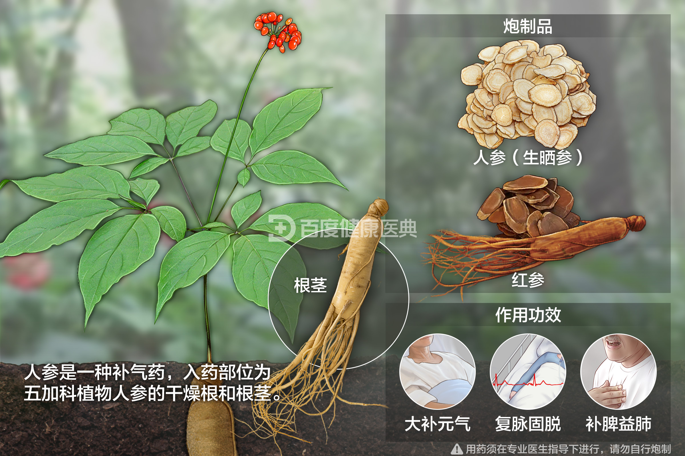
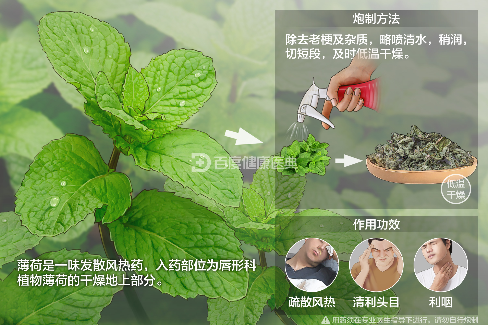

甘草
具有调和诸药、缓和药性的作用，常用于缓解药物的副作用。
枸杞子
滋补肝肾，益精明目，常用于治疗视力减退和肝肾不足。

白芍
具有养血柔肝、缓急止痛的功效，适用于肝郁气滞引起的疼痛。
熟地黄
补血滋阴，适用于血虚引起的各种症状，如面色苍白、头晕等。
生地黄
清热凉血，常用于治疗热病后期的余热未清。
麝香
具有开窍醒神、活血化瘀的功效，常用于急救昏迷和血瘀症状。

珍珠粉
具有安神定惊、美容养颜的功效，常用于改善睡眠和皮肤问题。


人参
大补元气，能增强体质，提高免疫力，适用于体虚乏力。
马齿苋
清热解毒，常用于治疗痢疾和皮肤湿疹。

薄荷
具有清凉解表、疏风散热的功效，常用于治疗感冒发热和头痛。
